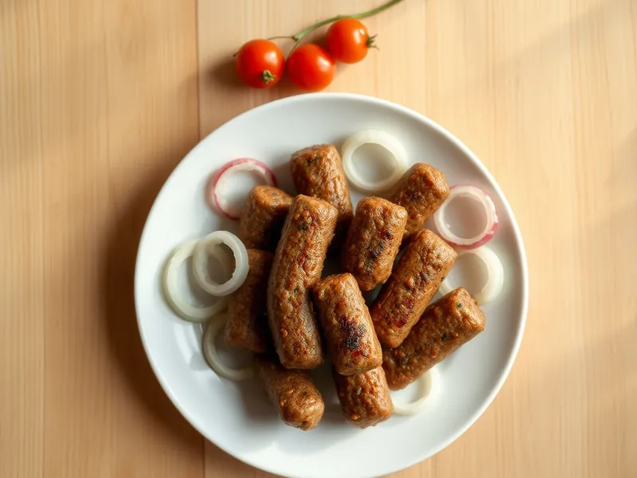

Фото: Иллюстрация ИИ, Cloudflare Workers AI
Чевапчичи на сковороде
Балканские колбаски из говяжьего и свиного фарша с чесноком и паприкой
25 мин3 порц.502 ккал на порциюБ 29 · Ж 40 · У 5Европейская кухня
Продукты на 3 порц.
- Говяжий фарш300 г
- Фарш свино-говяжий200 г
- Лук репчатый1 шт
- Чеснок2 зуб.
- Паприка2 ч. л.
- Сода1 щеп.
- Соль1 ч. л.
- Перец чёрный молотый1 щеп.
- Растительное масло1 ст. л.
Как готовить
- Натрите лук на мелкой тёрке и отожмите сок, чеснок раздавите, 4 минуты.
- Смешайте оба фарша с луком, чесноком, паприкой, содой, солью и перцем. Вымешивайте 5 минут, пока масса не станет липкой.
- Мокрыми руками сформуйте колбаски толщиной 2 см и длиной 8 см, получится около 12 штук.
- Разогрейте сковороду с маслом на среднем огне. Жарьте колбаски 8-10 минут, переворачивая, до румяной корочки со всех сторон.
- Сок из проколотой колбаски прозрачный. Подайте с сырым луком и свежими овощами.
Совет. Щепотка соды делает чевапчичи пышными и сочными. Сырые колбаски можно заморозить и жарить прямо из морозилки на 3-4 минуты дольше.